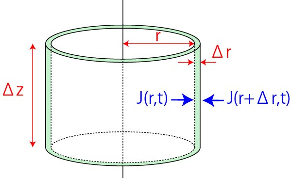
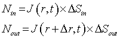
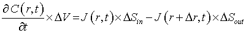
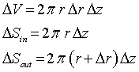
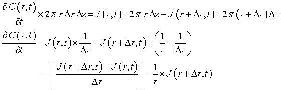
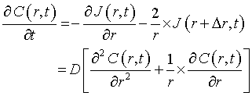

フィックの第二法則 - 円筒
次は，円柱座標系での拡散方程式，を考えていきましょう．．
今度は，円筒を考えますが，検討するエリアを，
rとx+Δｒの間の空間
とします．
また，長さを，Δz，とします．

この円筒に拡散により流入する分子の量は，

となります．
前ページにもありますように，単位時間あたりの濃度変化と等しいので，

円筒自体の体積ΔV，面積ΔSin，ΔSoutはそれぞれ，

と近似できるので，

となります．Δｒが十分小さいときには，

となります．これが円筒における拡散方程式です．
次に，球殻における拡散の様子を考えていきましょう．